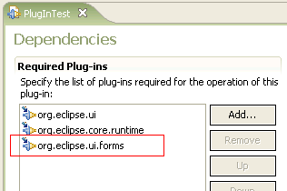
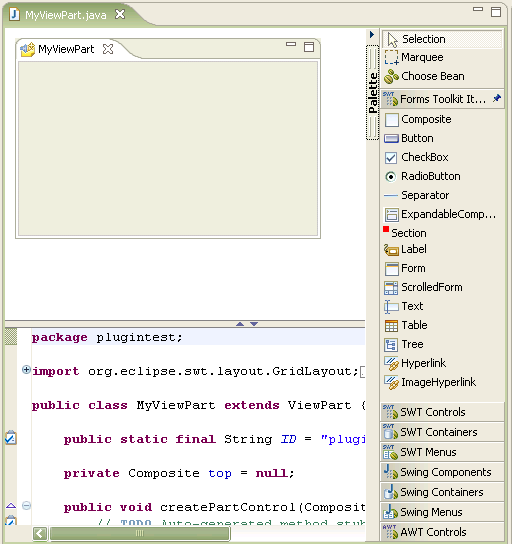
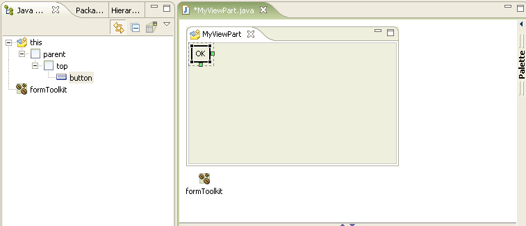

Support
for Eclipse Forms tooolkit
|
The
Visual Editor now has support for the Eclipse forms toolkit.
To use the toolkit with the Visual Editor the plug-in project
org.eclipse.ui.forms
should be a dependent project.

The Visual Editor queries the build path of the project when it is
opened against a .java file, and if org.eclipse.ui.forms is
present then a palette drawer for the Eclipse Form Toolkit will
be shown.

The first time an entry is dropped from the palette two objects will be
created, one for the control and one for an instance of the factory org.eclipse.ui.forms.FormToolkit.

The instantiation of the forms toolkit control is done using the form
toolkit factory createXXX
method,
instead of the usual SWT technique of a two argument constructor of
parent composite and style bit. Where the factory method has
additional arguments such as createButton(Composite
parent, String text, int styleBit) which has the text property
as a third factory argument this is used to set the text
private void
createButton() {
button =
getFormToolkit().createButton(top, "OK", SWT.PUSH);
}
|